Curriculum-Vitae
Contact
téléphone: (+243)815090720/0995668230
E-mail: christany7@gmail.com
Adresse physique: Salongo centre B3JN°708 C/Lemba
Nationalité: Congolaise/RDC
EDUCATION
COMPETENCES
AUTRES FORMATIONS
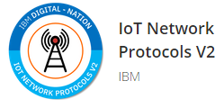
(certificat IBM )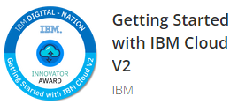
(certificat IBM )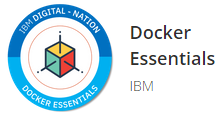
(certificat IBM )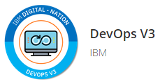
(certificat IBM )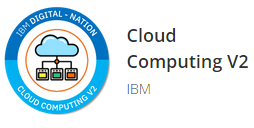
(certificat IBM )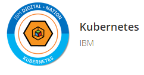
(certificat IBM)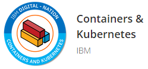
(certificat IBM )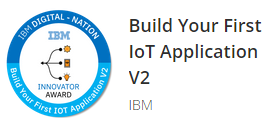
(certificat IBM )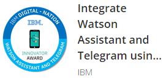
(certificat IBM )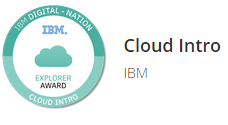
(certificat IBM )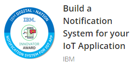
(certificat IBM )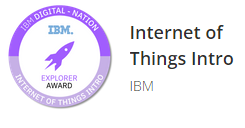
(certificat IBM )LANGUES
Français: Bon
Anglais: Assez Bon
AUTRES QUALIFICATIONS